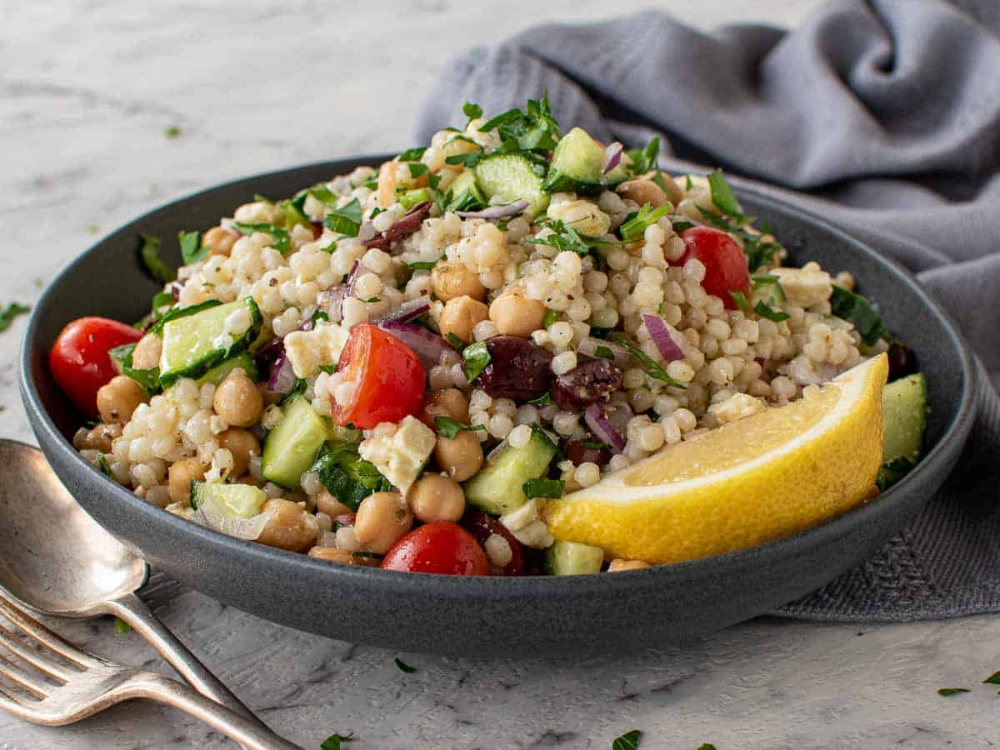

Greek Couscous Salad Recipe
Home

Description
This hearty Greek couscous salad uses Israeli couscous. So delicious!
Ingredients
- 1/2 cup water
- 1/4 cup chicken broth
- 1 teaspoon minced garlic
- 1/2 cup pearl (Israeli) couscous
- 1 cup canned chickpeas (garbanzo beans), rinsed and drained
- 1/4 cup chopped sun-dried tomatoes
- 1/4 cup sliced Kalamata olives
- 2 tablespoons crumbled feta cheese
- 1 tablespoon white wine vinegar
- 1 & 1/2 teaspoons lemon juice
- 1 teaspoon dried oregano
- 1/2 teaspoon ground black pepper
Steps
- Pour water and chicken broth into a saucepan, stir in the garlic and bring to a boil.
Stir in pearl couscous, cover the pan, and remove from heat. Allow couscous to stand
until water has been absorbed, about 5 minutes; fluff with a fork. Allow couscous to cool to warm temperature.
- Lightly toss couscous, chickpeas, sun-dried tomatoes, olives, and feta cheese in a large
serving bowl.
- To make the dressing: Mix white wine vinegar, lemon juice, oregano, and black pepper in a
small bowl until well combined. Pour over couscous mixture; toss again to serve.